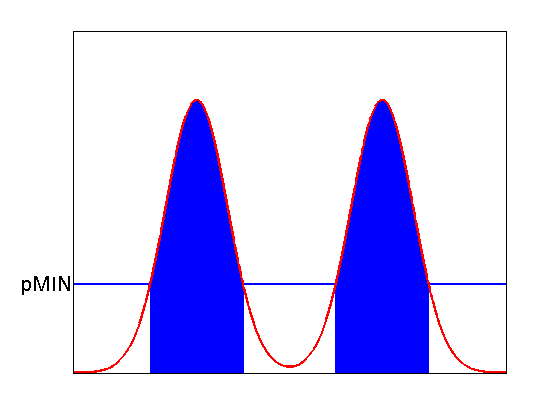

Illustration of central vs high posterior density intervals
function postDensityIntervals
f = @(x)gaussProb(x, 0, 1) + gaussProb(x, 6, 1);
domain = -4:0.001:10;
h = plot(domain , f(domain), '-r', 'LineWidth', 2.5);
axis([-4, 10, 0, 0.5]);
shade(f, 0, -1.5, 7.5, 'b', 0.005);
set(gca, 'XTick', [], 'YTick', []);
annotation(gcf, ...
'textarrow' , [0.1795 0.2454], [0.2971 0.1431], ...
'TextEdgeColor' , 'none' , ...
'FontSize' , 30 , ...
'String' , {'\alpha/2'} );
annotation(gcf, ...
'textarrow' , [0.8522 0.7863], [0.2971 0.1431], ...
'TextEdgeColor' , 'none' , ...
'FontSize' , 30 ,...
'String' , {'\alpha/2'} );
uistack(h, 'top');
printPmtkFigure centralInterval;

figure;
h = plot(domain, f(domain), '-r', 'LineWidth', 2.5);
axis([-4, 10, 0, 0.5]);
shade(f, 0, -1.5, 1.5, 'b', 0.005);
shade(f, 0, 4.5, 7.5, 'b', 0.005);
line([-4;10], [f(-1.5), f(-1.5)], 'Color', 'b', 'LineWidth', 2);
set(gca,'XTick', [], 'YTick', f(-1.5), 'YTickLabel', 'pMIN', 'fontsize', 20);
uistack(h, 'top');
printPmtkFigure HPD;

end